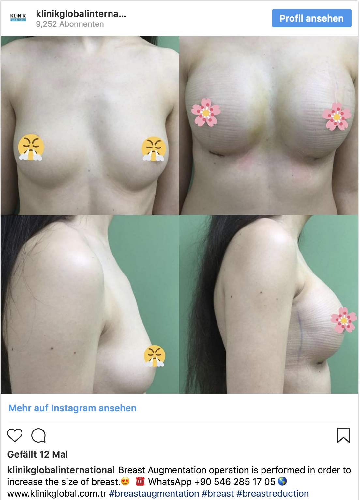
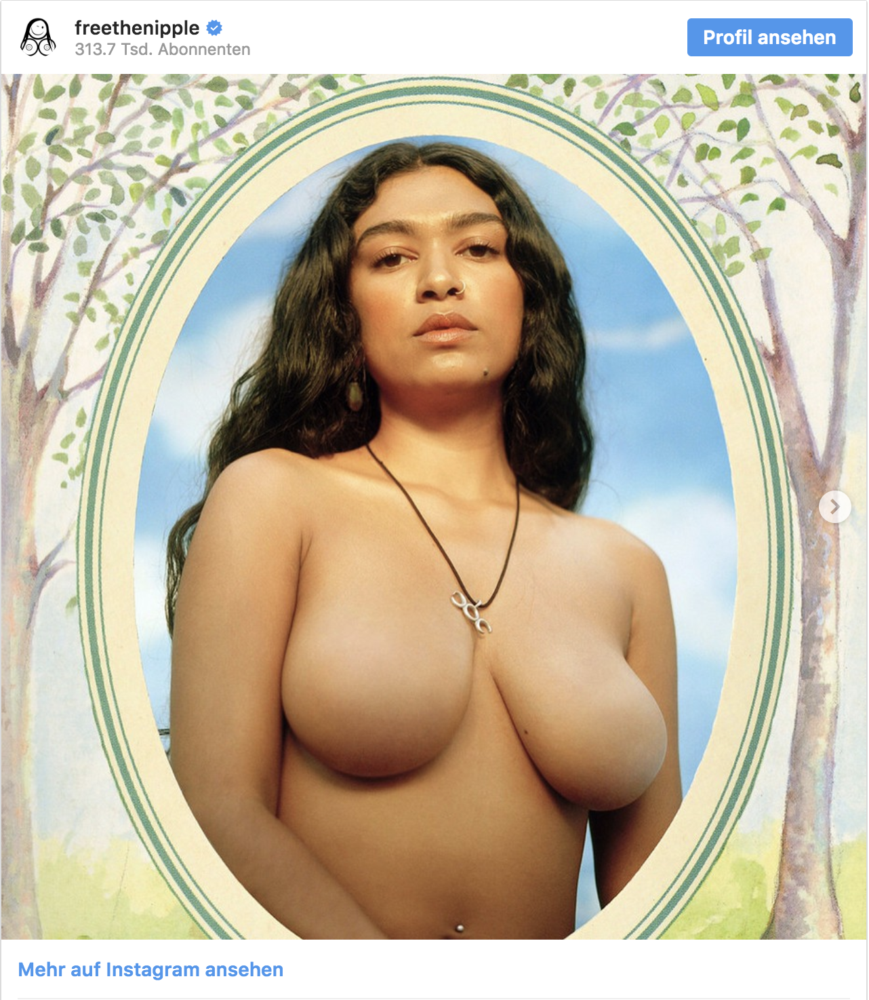

Facebook und Instagram finden Nacktheit irgendwie problematisch, so richtig kann man ihre Haltung aber nicht nachvollziehen - dafür gibt es zu viele Ausnahmen, Sonderregeln und völlig absurde Bilderlöschungen. Aber wirf doch selber mal einen Blick in die Richtlinien!
„Nö, Brustwarzen sind Brustwarzen, egal welches Geschlecht. Und doch hat sich eine in Sexismus mündende Prüderie in den sozialen Netzwerken durchgesetzt, die immer wieder deutlich macht: Frauenkörper werden per se sexualisiert. Kurz: der weibliche Körper ist anstößig, der männliche nicht.“
- Sylvia Follmann (editionf.com)
„{…} So schränken wir zum Beispiel die Darstellung weiblicher Brüste ein, wenn die Brustwarzen zu sehen sind, lassen aber Bilder zu, die etwa Protestaktionen oder stillende Frauen darstellen, oder Fotos von Narbenbildungen nach Brustamputationen. Außerdem sind Fotos von Gemälden, Skulpturen und anderen Kunstformen gestattet, die nackte Personen oder Figuren zeigen.


„{…} Aus verschiedenen Gründen ist die Darstellung von Nacktheit auf Instagram jedoch nicht zulässig. Das gilt auch für Fotos, Videos und einige digital erstellten Inhalte, auf denen Geschlechtsverkehr, Genitalien und Nahaufnahmen nackter Gesäße zu sehen sind. Dazu zählen auch einige Fotos, auf denen Brustwarzen von Frauen zu sehen sind. Fotos, die Narben nach einer Brustamputation oder aktiv stillende Mütter zeigen, sind jedoch erlaubt.“
